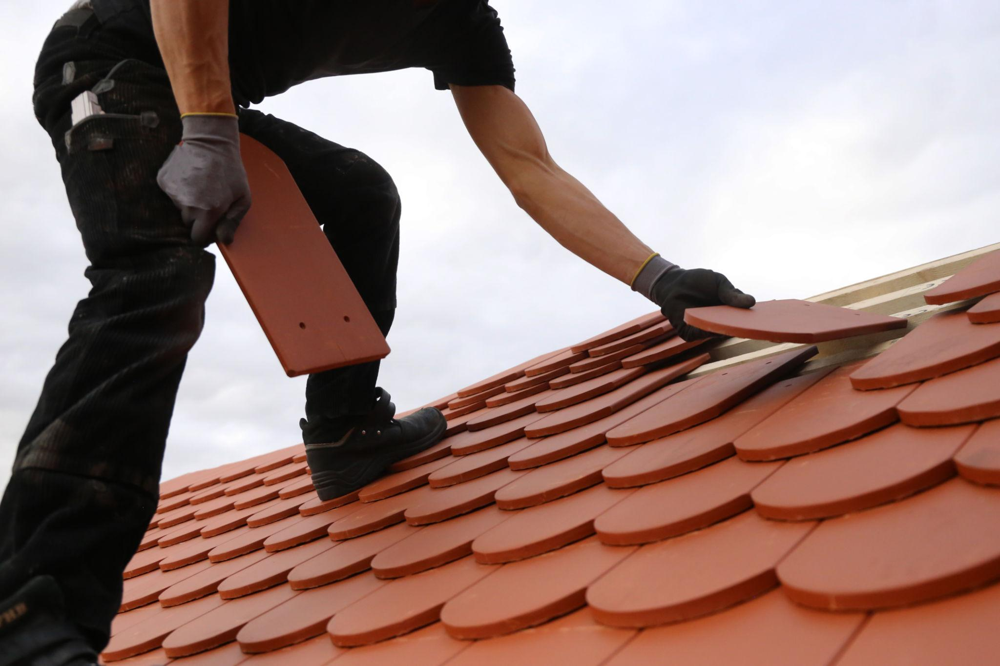
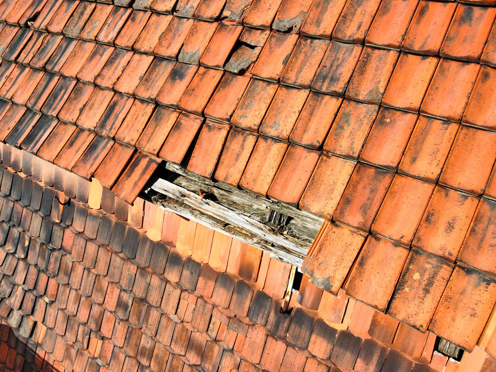
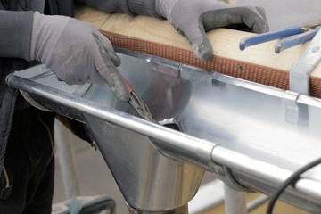

Unsere Leistungen im Detail
Reparatur bei Undichtigkeit
Undichte Stellen entstehen häufig an Anschlüssen (Schornstein, Gauben, Dachflächenfenster), an beschädigten Ziegeln oder durch verrottete Verblechungen. Wir lokalisieren die Leckage und beheben sie dauerhaft – ob einzelner Ziegelaustausch, neue Anschlussbleche oder Erneuerung des gesamten Bereichs.
Tipp: Ein Dach-Check vor der Heizperiode erkennt solche Schwachstellen, bevor Wasser eindringt.

Komplettsanierung
Wenn die Eindeckung über 30 Jahre alt ist oder mehrere Schadensstellen aufweist, ist eine Komplettsanierung wirtschaftlich sinnvoller als einzelne Reparaturen. Wir tragen den Altbelag ab, prüfen die Dachkonstruktion und decken vollständig neu ein – kombiniert mit einer aktuellen Dämmung nach GEG.

Sturm- & Hagelschadenreparatur
Sturmschäden am Dach sind in der Regel über die Wohngebäudeversicherung abgedeckt. Wir unterstützen Sie bei der Schadensmeldung: vollständige Fotodokumentation, detaillierter Kostenvoranschlag – und auf Wunsch direkte Kommunikation mit Ihrem Versicherer.
Wichtig: Je schneller eine Notabdeckung erfolgt, desto geringer ist der Folgeschaden. Rufen Sie uns sofort an.

Dachrinnen & Fallrohre
Verrostete oder undichte Dachrinnen schädigen langfristig die Fassade und das Fundament. Wir tauschen Rinnen und Fallrohre in Zink, Kupfer oder Kunststoff aus und installieren optional Laubschutzgitter, die Verstopfungen dauerhaft verhindern.
